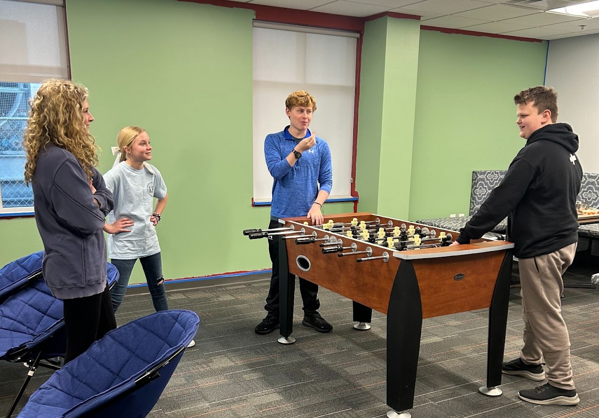

Faith, friendship, and support for every season of family life.
From children just beginning to grow in faith to parents seeking community and youth learning to follow Jesus in everyday life, we want families to know there is a place for them here.
Ministry for every stage.
Families need places to belong, grow, and be encouraged. These ministries are designed to help children, youth, and parents connect with Christ and with one another.
Ministries designed to help families grow together.
Whether you are raising little ones, navigating school years, or helping teenagers take ownership of faith, these ministries create space for encouragement, belonging, and spiritual growth.

Parent Connect
Encouragement and support for parents in every season of life.
Parent Connect is a life group created to encourage, equip, and support parents as they lead their families well. Whether you are raising young children, navigating the teenage years, or launching young adults, this group offers space for honest conversation, practical wisdom, and shared faith.
Together, parents learn from God’s Word, share real-life experiences, and grow stronger in both faith and family.

Sprouts Kids Ministry
Planting seeds of faith in young hearts.
Sprouts Kids Ministry is designed to help children grow in their love for God in a safe, fun, and engaging environment. Through age-appropriate Bible lessons, music, crafts, and interactive activities, children learn foundational truths of faith while building friendships and having a blast.
Our caring volunteers are committed to helping every child feel welcomed, loved, and excited to learn more about Jesus.

Rooted Youth Ministry
Growing deep. Living strong.
Rooted Youth Ministry is a place where middle and high school students come together to grow in faith, build friendships, and discover their purpose in Christ. It is a welcoming environment for students who are new to church and for those who have grown up in it.
We meet every Sunday at 4:00 PM for worship, Bible teaching, games, and small group discussion in a fun and encouraging setting.
We would love to help your family get connected.
Whether you are visiting for the first time, looking for a place for your children, or hoping to connect with other parents and students, we would love to help you find the right next step.